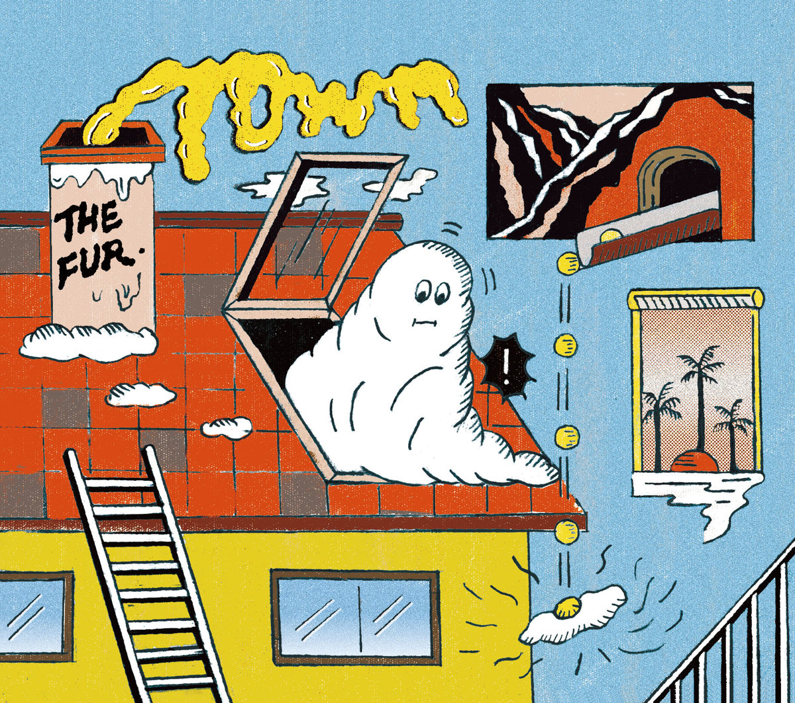

Album#4
Town
{kind=link}

靈感來自於 The Fur. 2018 初夏於歐洲巡迴表演時的紀錄照片，像是：探出屋頂窗戶看見的城市風景、坐在河堤啃漢堡、和當地朋友交談時的畫面…等等。
於是有了這樣的主視覺：爬上屋頂查看窗戶外傳來的聲響為何，發現不知道從哪來的球持續在墜落，驚喜的是在降落以前，誰也猜不到其實是顆荷包蛋！像是在生活的城鎮中《TOWN》，原本互不相識的人們，由一連串事物的碰撞，發生不可預期的連結，而有了接下來的故事。
专辑信息
整理 Blaugust 订阅流时，在 Renkon 的 Wandering through October 里看到了 Serene Reminder by The Fur.，就找来听了听。现在听歌有个习惯，如果某首歌听着不错，我会翻一翻这个歌手的其他专辑，于是听到了 Town。
Town 这张专辑给我的感觉是放松的、绵软的，会让我想到这些场景：散步、躺在树底下看着蓝天、傍晚时分在海边坐着吹着微风，悠闲而心情愉悦。
这张献给「高雄的夏日、阳光与蓝天」的专辑，充盈着悠闲舒缓的宁静曲调，必将带你进入愉悦心境。主唱 Savanna (其声线令人联想到 SALES 的 Lauren Morgan 和 Sobs 的 Celine Autumn) 在 Zero 与 Ren 温暖吉他伴奏下的吟唱令人沉醉，而 Wen Wen 的合成器则为整体音效增添朦胧质感。若说 The Fur. 最擅长什么，那必然是创作出让你想躺下仰望「蓝天」与流云的旋律。
专辑的歌词我很喜欢，简单而温暖，网易云中的翻译也很棒。
歌词
-
A second, a minute, an hour, a day
一秒、一分、一小时，一天过去了
A week, a month, a year, a decade
一周、一月、一年，十年又过去了
A second, a minute, an hour, a day
一秒、一分、一小时，一天过去了
A week, a month, a year, a decade
一周、一月、一年，十年又过去了
Wait, wait, wait1
等啊等
Wait, wait, wait
等等等
Be safe
稍安勿躁
Take care
你会发现
A good day
开心也是一天
A bad day
不开心也是一天
A bad day, a bad day, you better take good care
你最好开心一点
A second, an hour, a day
一秒、一分、一小时，一天过去了
A week, a month, a year, a decade
一周、一月、一年，十年又过去了
A second, a minute, an hour, a day
一秒、一分、一小时，一天过去了
A week, a month, a year, a decade
一周、一月、一年，十年又过去了
Wait, wait, wait
无尽的等
Wait, wait, wait
虚度时光
Come over a thousand miles and let me see you try
如果你漂洋过海来见我
Cause I’d be the one you like that we could spend the night time
你会发现我是你中意的那款
Come over a thousand miles and let me see you try
如果你漂洋过海来见我
Cause I’d be the one you like that we could spend the night time
我会让你知道夜晚有多美
漂洋过海来见一个人，浪漫呀。
-
My grandma feels lonely
我外婆时常感觉到孤独
She is always walking on the street
她老是走在那条街道上
She wants to talk to
她想要找个人说说话
My grandma feels lonely
我的外婆觉得自己很孤独
She is always walking on the street
她老是在那条街上散步
She wants to talk to
她想要找个人聊聊天
She said
她说
Oh Messi, I wanna talk to you
Oh Messi，我想要和你说说话
Oh Messi, please come and talk to me
Oh Messi，请来看看我和我聊聊天吧
My grandma feels lonely
我的外婆说她时常会觉得寂寞
She has given everything
她已倾其所有
She wants to talk to
她想要说说话
She said
她说
Oh Messi, I wanna talk to you
Oh Messi，我想要和你说说话
Oh Messi, please come and talk to me
Oh Messi，请来陪陪我和我说说话吧
Oh Messi, I have a dream with you
Oh Messi，我一直有梦到你
Oh Messi Messi, life is hard to me
Oh Messi，生活对于我来说太艰难了
让我想起了 与玛格丽特的午后，人老了之后或许真的很寂寞吧。
「Oh Messi, life is hard to me, please come and talk to me.」
-
Sleepwalkers lie down
梦游者躺下去了
Broken people are all around
周围都是残缺之人
I'll be waiting in the dark
我会在黑暗之中等待
In the dark I would wonder how
在黑暗之中我想知道
Wake up in the morning
到底怎样才能在早晨醒来
You said hi
你说hi
You said bye
你说bye
In that summer
在那个夏天
I'll be there
我会在那儿
In that winter
在那个冬天
I'll be there
我会在那儿
像是童谣一样的歌，慢慢的旋律，感觉很适合当入睡曲。当唱到「Wake up」的时候，又仿佛轻声喊你别沉睡了，快起来。
-
We walk out of the door to be conquered, to be conquered
我们走出家门，去寻求挑战，去撞撞南墙
It should be somehow
总会有解决的方案
It should be better, it should be better
船到桥头自然直
Down, down, down, down
来吧来吧 去干吧
Down, down, down, down
来吧来吧 去干吧
And so I stop for a while
即使我被困住 那只是暂时的
I wouldn't care
我不会在意
I wouldn't cry
我才不会哭呢
And so it is
没错 就这么干
As how we've started
一开始
By the river
我们就遇到了阻拦
Down, down, down, down
来吧来吧 去干吧
Down, down, down, down
来吧来吧 去干吧
If you always keep silent you'd never get the thing you wanna get
如果你只是沉默 你不会得到你真正想要的
Until your body is discovered in the backyard of regrets
难道你要等到百年之后 让你的遗憾跟你长埋于后院
If you keep silent you'd never get the thing you wanna get
如果你无动于衷 你不会得到你真正想要的
Until your body is discovered in the backyard of regrets
直到多年以后 你的遗憾深埋地底被人发现
If you keep silent you'd never get the thing you wanna get
如果你只是沉默 你不会得到你真正想要的
Until your body is discovered in the backyard of regrets
难道你要等到百年之后 让你的遗憾跟你长埋于后院
If you keep silent you'd never get the thing you wanna get
如果你无动于衷 你不会得到你真正想要的
Until your body is discovered in the backyard of regrets
直到多年以后 你的遗憾深埋地底被人发现
It should be better, it should be better.
Down, down, down, down.
不管如何，先试试看吧，先迈开步走出家门吧。
前半段像是一种鼓励，而后半段则是一种警告，要是什么都不做，或许到最后，遗憾只能深埋。
-
You open the door and you let me in
你终于敞开心扉
I sing everywhere
我为你歌唱
And dancing
还邀你共舞
You sit there like you wanna die faster
你却枯坐着 就像在等待着死去
You make a joke about your innocence
你嘲笑曾经无知的自己
You laugh so hard like you never did
你嘲笑曾经无知的自己
I sit there like I wanna die faster
你对死亡的渴望感染了我
It is what it is
生活就是如此
Nothing special
不值一提
It is what it is
事实就是如此
No matter where you go
放之四海而皆准
You open the door and you let me in
你终于敞开心扉
I sing everywhere
我为你歌唱
And dancing
还邀你共舞
You sit there like you wanna die faster
你却枯坐着 就像在等待着死去
You make a joke about your innocence
你嘲笑曾经无知的自己
You laugh so hard like you never did
你嘲笑曾经无知的自己
I sit there like I wanna die faster
你对死亡的渴望感染了我
It is what it is
生活就是如此
Nothing special
不值一提
It is what it is
事实就是如此
No matter where you go
放之四海而皆准
It is what it is
生活就是如此
Nothing special
不值一提
It is what it is
事实就是如此
No matter where you go
放之四海而皆准
开心地去找朋友，结果朋友正在郁郁寡欢，到最后自己也都跟着郁郁寡欢了。但还是安慰起来，生活就是如此，是有些无奈呀，但又能怎样，还是开心起来，跳起舞来吧。
-
How did you spend your ten-year-old birthday
你要如何挥霍你十岁的生日呢
How do you feel like being a man
成为一个男人的感觉怎么样
How did you grow up without friends
没有朋友，你该是怎样长大的啊
Baby time has gone and now you're getting older
孩童时期已经过去了现在你又长大了一点
How did you spend your ten-year-old birthday
你要如何度过你的十岁生日呢
How do you feel like being a man
你觉得成为一个男人是什么样子的感觉呢
Everyone grows up without friends
每一个人的成长都没有朋友相伴
Baby time has gone and now you're getting colder
幼儿时期已经过去了现在你已经成长了
Avocado, avocado apple cake
鳄梨，鳄梨苹果蛋糕
Avocado apple cake
鳄梨苹果蛋糕
Not my day
这一天不属于我
Avocado, avocado apple cake
鳄梨，鳄梨苹果蛋糕
Avocado apple cake
鳄梨苹果蛋糕
Not my day
今天与我无关
有点坏，像是在问「你都十岁了，怎么还没有朋友呀？」
-
纯旋律的一首曲子，有点 City Pop、蒸汽朋克的感觉。
-
很像 Lofi Girl 的风格，一个人深夜里带着耳机安静地做一些事情。
{kind=link}
The Fur. 的第二张专辑 Serene Reminder 也蛮好听的，更活泼，像是在夜晚开着车穿梭在隧道里，进入一段奇幻的旅程。
两张专辑我都很喜欢，遗憾的是乐队已经休团了，在最后的贴文里柚子写道：
就在現在，如果你喜歡哪個樂團，就在此刻好好地喜歡他們，因為樂團是人組成的，人與人之間是一種緣份，雖然聽起來很老氣。希望沒有人會因為必須離開而感到愧疚，因為作出選擇也是勇敢的一種，就像你聽到 Serene Reminder 的最後一首歌，car of yours，它是結束的同時也是啟程，祝你我都在這趟美好的地球之旅，各自路上前進，平安。
Car of Yours 结束后循环的第一首明明是 Stay with Me。不过既然他们已经决定好踏上新的旅途，那就希望他们都好，平安。
Julie, please be free
Do whatever you need to do
Nothing to weep for anymore
No, you don’t need to worry
{kind=link}
See also:
- Review: The Fur. – Town
- 衝浪城鎮：The Fur.
- the Fur. — 「如果你喜歡哪個樂團，就在此刻好好地喜歡他們」
- 專訪 | The Fur. 讓你忘記時間的私藏 Chill 音樂 | Sound Of Life
脚注:
喜欢林貓王在 衝浪城鎮：The Fur. 中的描述：
從一分一秒等到一月一年，最巧妙的是英文的「Wait, Wait」聽起來就像是中文的「喂？喂？」，在話筒之外的等待。